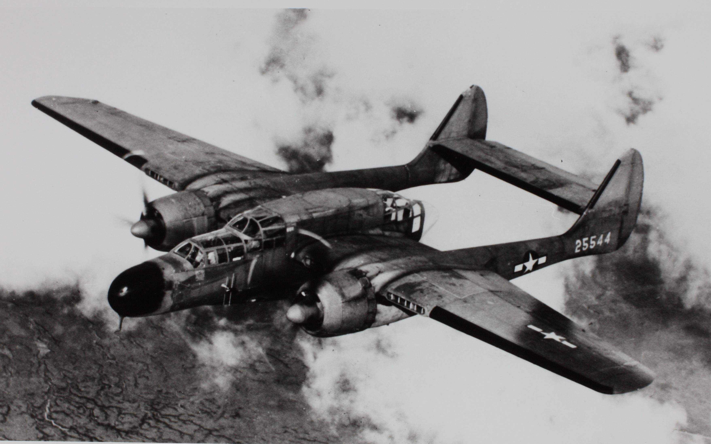

Northrop P-61 Black Widow (1942)

| Specifications | |
|---|---|
| Crew | 3 (pilot, radar operator, gunner) |
| Engine | 2 × Pratt & Whitney R-2800-65W Double Wasp |
| Length | 15.11 m / 50 ft 7 in |
| Wingspan | 20.12 m / 66 ft 0 in |
| Height | 4.47 m / 15 ft 8 in |
| Wing Area | 61.53 m² / 662.30 sq ft |
| Empty Weight | 10637 kg / 23451 lb |
| Take-off Weight | 16420 kg / 36200 lb |
| Maximum Speed | 589 km/h / 366 mph |
| Range | 2173 km / 1350 mi |
| Ceiling | 10090 m / 33100 ft |
| Armament | 4 × 20 mm (0.79 in) Hispano AN/M2 cannons, 4 × 12.7 mm (0.50 in) M2 Browning machine guns, 2900 kg (6400 lb) of bombs |